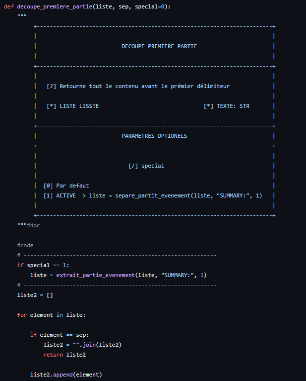
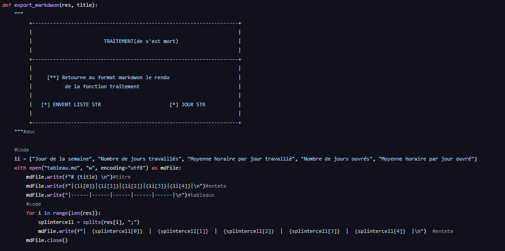

Outils
Logiciels
- PyCharm
- VS Code
- Excel
Technologies
- GitLab
- API
Langages
- Python
- Git
Ce projet universitaire a été réalisé dans le cadre de ma formation en informatique. Il avait pour but de développer une application fonctionnelle autour d'une API, tout en respectant un cahier des charges précis et des contraintes techniques réelles.
Ce travail m'a permis de renforcer mes compétences en développement Python, en gestion de projet, et d'expérimenter des outils professionnels comme PyCharm et GitLab. J'ai aussi découvert l'intérêt de structurer efficacement son code pour faciliter sa lecture, sa maintenance et sa documentation.
L'IUT nous a fourni une API qui présentait les données sous forme de dictionnaire, incluant les horaires de toutes les personnes travaillant à l'IUT et des salles disponibles. Il a fallu rechercher les informations via l'API, puis procéder à un tri en sélectionnant uniquement les vacataires.
Une fois les informations triées, nous avons utilisé un module CSV de Python pour les intégrer. Le fichier CSV était disponible sur un site internet que nous avons dû déployer. Grâce à ce site, les vacataires pouvaient réserver une salle.
J'ai beaucoup apprécié ce projet car il m'a permis de découvrir l'outil PyCharm, que j'utilise désormais sur mon temps personnel. Ce qui m'a le plus captivé, c'est que ce projet avait un véritable objectif concret et applicable dans le monde professionnel.
Quelques images supplémentaires liées au projet.


